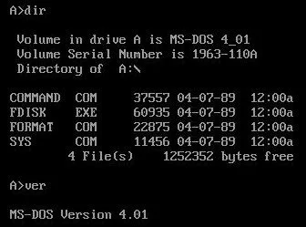
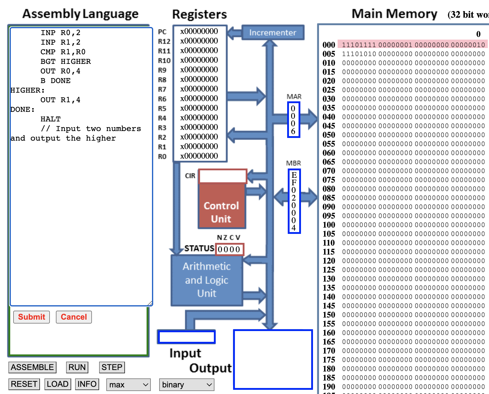
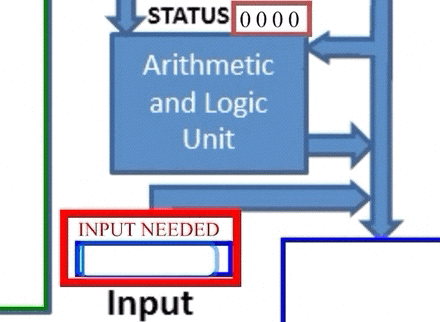
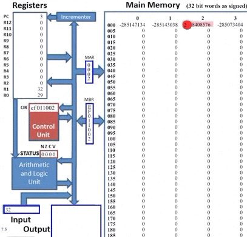

simulateur processeur
Séquence composée de 3 parties:
- TP1 Composer son ordinateur à partir d’un site commercial: Lien
- TP2: Comment fonctionne un processeur? Lien
- TP3: Programmes plus evolués, de python à l’assembleur: Lien
Cours:
- Modèle d’architecture Von Neumann: Lien
Comment fonctionne un processeur?
Modèle d’architecture de von Neumann
Depuis plus de soixante ans, l’architecture des ordinateurs est conforme à un schéma qui a peu évolué depuis son origine : le modèle dit « de von Neumann ».
Le simulateur AQA, développé par Peter L Higginson, se conforme à cette architecture. C’est ce que propose de découvrir cette séance.
Langage machine
Pour utiliser le simulateur, il faut charger ou rediger des programmes.
Un processeur lit et execute du code binaire, le langage machine. Programmer en binaire est d’une énorme difficulté: il faut mémoriser les codes numériques des instructions et de faire des calculs d’adresses.
Langage assembleur
Les langages assembleur ont éliminé une grande partie des erreurs commises par les programmeurs de la première génération d’ordinateurs.
En assembleur, chaque instruction correspond à un code binaire du langage machine. Il y a une correspondance direct entre le langage machine du processeur et les mnémoniques de l’assembleur. Ces instructions sont de 3 types:
- transfert de données (gestion mémoires)
- arithmétiques
- rupture de séquence
La programmation en assembleur était alors utilisée pour écrire toutes sortes de programmes.
De gros programmes ont été écrits entièrement en assembleur pour les micro-ordinateurs, comme le système d’exploitation DOS de l’IBM PC (environ 4000 lignes de code).

système d'exploitation DOS de l'IBM PC
Il n’existe pas UN assembleur, mais plusieurs assembleurs: Chaque famille de processeurs utilise un jeu d’instructions différent.
Programmer en Assembleur n’est pas compliqué, mais faire des programmes compliqués en Assembleur est parfois très compliqué. C’est pour cela que sont nés les langages évolués de programmation.
Les compilateurs (ex: GCC) traduisent les codes de haut niveau en assembleur dans le processus de compilation d’un code exécutable.
Enfin, certaines plateformes matérielles embarquées sont encore exploitées avec du code assembleur pour des questions de faibles ressources mémoire (vive et stockage en ROM).
L’assembleur est aussi utilisé en cybersécurité.
Le simulateur
- Lancer le simulateur:

clic droit > ouvrir dans un nouvel onglet pour lancer le simulateur ARM
- Q1a. Distinguer sur l’image les différentes parties du simulateur :
- la mémoire vive (“main memory”),
- le microprocesseur,
- la zone d’édition (“Assembly Language”) dans laquelle on peut charger, lire et écrire un programme en assembleur.
- Q1b. Distinguer dans la partie processeur:
- l’Unité artithmétique et logique
- l’Unité de contrôle
- les registres. (cette question peut être traitée plus tard).
prise en main
-
Dans la mémoire:
- Chaque cellule de la mémoire possède une adresse (de 000 à 199)
- Par défaut le contenu des différentes cellules de la mémoire est en base 10 (entier signé), mais d’autres options sont possibles : base 10 (entier non-signé, “unsigned”), base 16 (“hex”), base 2 (“binary”). On accède à ces options à l’aide du bouton “OPTIONS” situé en bas dans la partie gauche du simulateur.
À l’aide du bouton “OPTIONS”, passez à un affichage en binaire.
- Q2. Combien de bits codent chacune des données de la mémoire?
Vous pouvez repasser à un affichage en base 10 (bouton “OPTION”->“signed”)
Charger maintenant un programme: (bouton SELECT). Choisir Add. Ce premier programme réalise une addition à partir de 2 valeurs entrées par l’utilisateur.
- Q3. Recopier le script de ce programme.
Executer le programme. (il faudra entrer les valeurs à additionner comme vu sur l’image ci-dessous)

Entrée/Sortie du simulateur
On peut ralentir la simulation avec
<<. Et avancer le programme Pas à Pas (STEP).
-
Q4a. Quelle instruction en assembleur, va déclencher l’opération d’addition? Quel composant de l’ordinateur charge cette instruction et commande son execution?
-
Q4b. Quel est le code binaire (langage machine) pour l’opération d’addition? Quelle est le code hexadecimal correspondant?
-
Q5. Quelle partie du processeur réalise l’addition? A partir de quels registres? Ou place t-il le résultat (quel registre)?

extrait de la simulation du calcul
Le simulateur montre les transferts de données entre les différentes parties de l’ordinateur. L’image ci-dessus montre:
-
l’Unité de contrôle charge l’instruction de la mémoire
-
l’Unité arithmétique charge les données des registres
-
l’Unité arithmétique place le résultat du calcul dans un registre
-
l’Unité de contrôle ordonne l’addition à l’Unité arithmétique
-
Q6. Remettre les instructions dans l’ordre.
Observer le rôle du registre appelé program counter (PC)

Affichage du résultat et fin du programme
- Q7. Expliquer: Le PC: Quand avance t-il d’une unité? Quel est le lien entre le PC et la mémoire?
Transfert de données
Les opérations de transfert se font d’un registre vers un emplacement mémoire, ou l’inverse.
| Ordre | Instruction | Description en langage naturel |
|---|---|---|
| Affectation (variable) | x: 23 |
Place 23 dans la variable x, c’est à dire 23 dans l’emplacement RAM prévu pour x |
| Affectation (registre) | MOV R1, #23 |
Place la valeur 23 dans le registre R1 |
| Charger | LDR R1, 78 |
LOAD: Place dans le registre R1 la valeur stockée à l’emplacement 78 de la RAM |
| Stocker | STR R1, 151 |
STORE: Place dans la RAM à l’emplacement 151, la valeur stockée dans le registre R1 |
| Stocker | STR R1, x |
STORE: Place dans la RAM à l’emplacement prévu pour x, la valeur stockée dans le registre R1 |
Exemple 1:
Le programme suivant affecte une valeur dans un registre, puis la copie dans la RAM.
Copier-coller le script, cliquer sur submit, puis sur ASSEMBLE. Régler le bouton OPTIONS sur hex
L’assembleur a fait son travail, il a converti les 3 lignes de notre programme en instructions machines, la première instruction machine est stockée à l’adresse mémoire 000 (elle correspond à “MOV R0,#254” en assembleur).
Q8. Vérifier que 254 (base 10) = fe (base 16). (Rappels: f <=> 15 et a un poids de 16, e <=> 14 et a le poids de 1)
Q9. Combien de lignes fait le programme? Quelles sont les adresses dans la RAM des instructions (donner la somme colonne + ligne)?
Dérouler le script pas à pas (appuis successifs sur STEP)
Q10. Quel est le registre utilisé? Quelle est la valeur déplacée? Quelle adresse de la RAM va contenir la valeur à stocker?
En informatique, on définit la complexité temporelle comme le temps mis par une machine universelle pour executer un programme.
Q11. Si l’on suppose que la complexité temporelle est égale au nombre de fois qu’il faut appuyer sur le bouton STEP pour arriver à la dernière ligne du programme: Quelle est la compléxité de ce programme?
Modifier le programme pour que cette fois, à la fin du programme, la donnée #fe se trouve à l’adresse 10 de la mémoire.
Exemple 2: échange de valeurs
Dans un programme en assembleur, il sera plus facile de manipuler des variables que des adresses mémoires.
Copier-coller le script, assembler.
Q12. Vérifier que 23 (base 10) = 12 (base 16), et que 18 (base 10) = 12 (base 16).
Q13. Combien de lignes fait le programme? Quelles sont les adresses dans la RAM des instructions (donner la somme colonne + ligne)? Quelles sont les adresses RAM des données?
Dérouler le programme à vitesse réduite.
Q14. Interpréter les lignes 0 à 4 du programme (donner une explication en langage naturel).
Suite du TP
- s’il vous reste du temps, faire les question à faire vous même 5 et 6 du TP qkzk
*On utilisera le bouton INFO sous le simulateur pour prendre connaissance des instructions utiles.
- La séance 2: programmes plus évolués en assembleur: Lien

Video MOOC NSI - de python à l'assembleur
Liens
- interstices - modèle d’architecture Von Neumann
- wikipedia: Von Neumann
- TP inspiré du site de qkzk